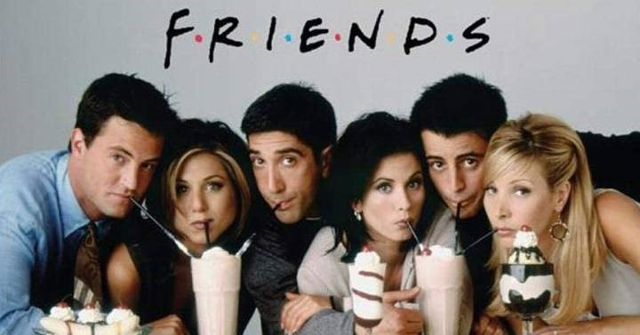
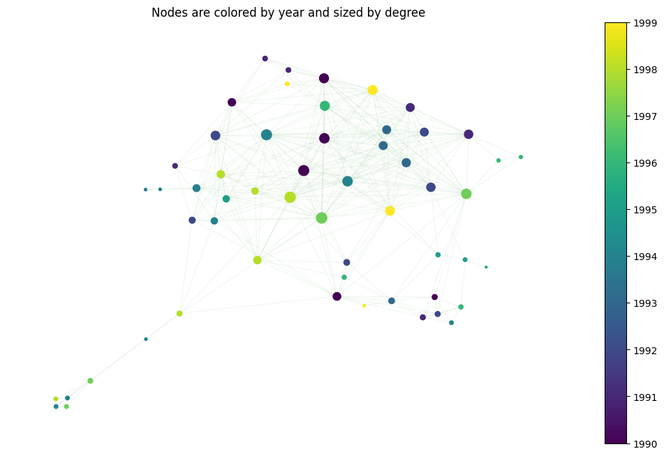
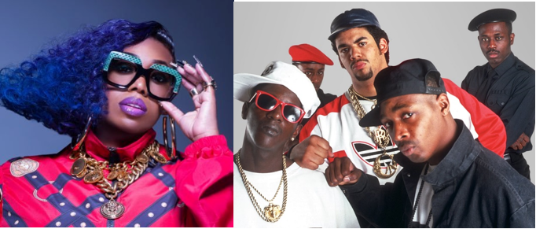
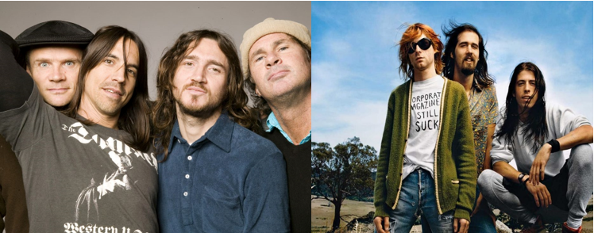
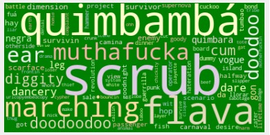

The 90's
The 1990s was a decade where pop culture took flight, dance moves were born and fast-food got even bigger. Friends and their I’ll be there for you started in this decade and they are still popular two decades later. Did the same thing happen with music? Are the genres of this era still in use today? Have the 90’s never ended?
The centrality of the graph of this decade reveals that hip hop is one of the most popular genres. In Hip hop’s roots we can find pop, disco and soul music that have been starring in the 80’s.
Hip hop is a culture movement that was created by African and Caribbean Americans in the Bronx. This genre is characterized by four key elements: rapping, DJing, break dancing and graffiti. It goes without saying that these elements have tremendously influenced the genres of today. The mixture of reggaeton and rap gave trap, DJing+rap+Pop gave electronic music of today.
The limits between rock and Pop in this decade are also blurry. Green Day brought Punk rock which then was the base for Punk rock. Red Hot Chili Peppers and Nirvana are some that appear in the top of our list.
Lexically we can also see the expansion of Hip hop. Bad words start to come up, more slang appear in our word clouds, terms like battle, scare face, enemy… stand out. These terms cannot catch us by surprise; hip-hop often revendicates, it is a fighting genre where they often talk about social problems, discrimination… Another interesting detail of the word clouds formed is that there are a few Spanish words which also makes sense as we have seen that hip hop was created by Central Americans.
So, it looks like the 90’s never ended, but have new nodes been born?